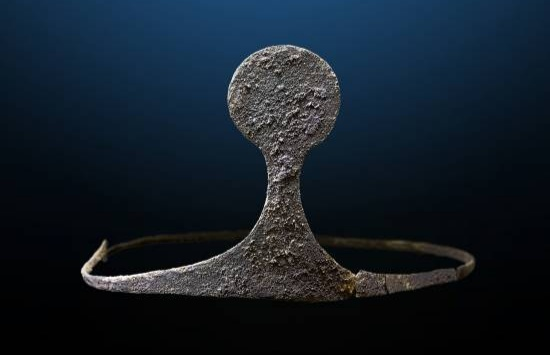

Hallazgos arqueológicos
Los hallazgos realizados en el lugar, llevados a cabo por investigadores desde el año 2013, dentro del proyecto La Bastida de Totana, a cargo de la Universidad Autónoma de Barcelona, ha podido poner de manifiesto el rico patrimonio arqueológico que aquí yace, indican que La Almoloya, era un centro político-administrativo que guardaba y concentraba las riquezas de la cultura Argárica en la Edad de Bronce. Se han logrado descubrir ciertas estructuras como complejos residenciales, edificios, además de hogares ceremoniales y múltiples podios. Muchas de las estructuras y paredes se encontraron con pintura que hacía alusión a un estilo Argárico basado en diseños con motivos geométricos; como lunares, rayas, círculos, triángulos y además diseños naturalistas.5 En cuanto a formas simbólicas, en las excavaciones, apenas unas cuantas piezas pueden clasificarse como figuras o representaciones y, en todos los casos, se trata de piezas pequeñas de barro muy sencilla, que suelen representar a bovinos. Además, de unos pocos diseños sencillos en recipientes de cerámica, sólo con motivos geométricos. Se logró descubrir una cisterna de abastecimiento de agua de forma ovalada, que pudo contener hasta 12.000 litros de agua, sus muros estaban recubiertos por espesas capas de arcillas y margas que servían como impermeabilizantes.
Estructuras
El asentamiento de la Almoloya se componía de viviendas que ocupaban la plataforma superior del cerro, separadas por calles estrechas y drenajes. Al parecer, era protegida por un recinto defensivo de piedra en los flancos oeste, sur y noroeste de la cumbre del promontorio. Por la gran solidez y perfección en la edificación de partes del asentamiento, éste presenta algunos rasgos únicos en la Europa prehistórica. Su construcción se basó en muros de piedra, revestidos con capas de mortero y terminaciones con cal usada como conglomerante, que da cuenta de lo sofisticada que fue esta cultura, ya que para la elaboración del cal se necesitan procesos estructurados y hornos de 900 °C.6 Las viviendas incluyen varios edificios residenciales de 300 metros cuadrados, con entre ocho y doce habitaciones cada uno, las que se recibían para diversos usos domésticos, además de trabajos de metalurgia, molienda de cereal, telares y almacenamiento. Las techumbres estaban compuestas por palos cubiertos con ramajes y capas de barro solidificado.7 En La Almoloya se encontró un palacio argárico, que cuenta con una sala de setenta metros cuadrados, con un podio ceremonial y que pudo servir como lugar de reuniones, audiencias y celebraciones, posee una capacidad de 64 asientos contiguos a la pared.5 Con un alto techo afirmado por doce postes con distribución en zigzag. Se cree que en este edificio palacial se pudo reunir individuos políticamente destacados, de alto prestigio y poder, y que desde ese lugar se tomaban las decisiones gubernamentales que afectaban a su población. No se encontró vestigio alguno de edificación destinada a la celebración exclusiva de ritos y ceremonias sagradas. La tumba de La mujer de plata o Dama de la diadema fue hallada dentro de una urna en el subsuelo de este edificio.
Tumbas
En La Almoloya, los enterramientos presentan dos formas de inhumación: en cista y en urna. Durante el recorrido de investigación arqueológica y excavaciones, se constató la presencia de aproximadamente 76 tumbas entre individuales y dobles situadas en el subsuelo de las viviendas. Entre ellos 55 adultos, 33 mujeres y 22 varones, además de 28 infantes en fases tempranas de edad. Diadema de plata de la Dama de Almoloya. (2014) En las excavaciones de 2014 se pudo dar cuenta del entierro 38, dentro de la Sala de audiencias o edificio del palacio, en el interior de una urna se localizaron los restos de una pareja de alto estrato social. La mujer a la que se llama la 'Dama de la diadema' de 25-35 años de edad, con múltiples ofrendas funerarias que incluyen piedras semipreciosas y objetos de oro, plata y cobre.1 El cráneo de la mujer tenía colocada una diadema de plata, un objeto emblemático, que representa materialmente (symbolon) ideas o valores sociales, exigiendo alguna forma de respeto.8 Además objetos como dagas, dilatadores insertados en los lóbulos de las orejas (que implican una técnica de forja completa), así como también, anillos, cadenas y vasos de cerámica con incrustaciones de láminas de plata. El trato que se le dio y los materiales que la acompañan, con marfil, ámbar y plata de cientos de kilómetros, parece indicar que no sería solamente la jefa de un poblado, sino una autoridad política de un territorio.1 Dibujo de un cráneo con Diadema de la Cultura argárica, (1887). En todos los casos, los cadáveres se presentan encogidos en la postura clásica, con los brazos doblados y pegados al cuerpo, con las piernas también dobladas y las rodillas junto al mentón, en posición fetal. El examen científico de varios esqueletos sugieren que el cabalgar fue una actividad masculina habitual, y también que realizaban una intensa actividad física con el brazo derecho. Los varones de la clase dominante manejaban armas de bronce o cobre, como espadas. Por otro lado, se detectó evidencia de que algunos padecían enfermedades infecciosas pulmonares.9 En cuanto al origen de los metales utilizados, se considera que la mayor parte de la materia prima se extrajo en minas situadas en Sierra Morena, a 300 km de distancia. Se piensa que la sociedad argárica desapareció, por una mala gestión de sus recursos naturales, a causa de un desastre ecológico causado por el hombre que tuvo mucho que ver con la deforestación a la que sometieron a esta zona